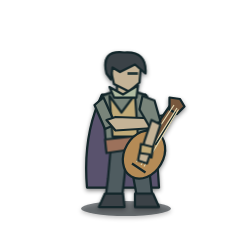

原生SVG关节动作
静态结算姿态。
动作900毫秒，是本项目演出节奏，不是战斗秒数。脚底锚点保持，动作没有新增施法或支援。
第131次正式出征，塞恩施放「灵感启蒙」：原记录3 → 4。样片取自同一次已发生的施放与效果组件，数值、目标和战报保持。
这是独立角色样片，不能替代你刚才查看的报告。生产回放使用当前步的原生SVG动作；此页冻结v180模型和样式，便于对照八帧导出。
静态结算姿态。
动作900毫秒，是本项目演出节奏，不是战斗秒数。脚底锚点保持，动作没有新增施法或支援。

尚未加载GIF。
真实八帧本地采集编码，循环1100毫秒，包含末帧停留与时间取整。GIF只有二值透明和256色，不能精确寻帧；PNG保留柔和透明边缘。不是新imagegen或直接GIF生成器产物。
播放需要明确点击；减少动态效果时保持静态，停止GIF会恢复结算图。本页不读写公会、准备或奖励。